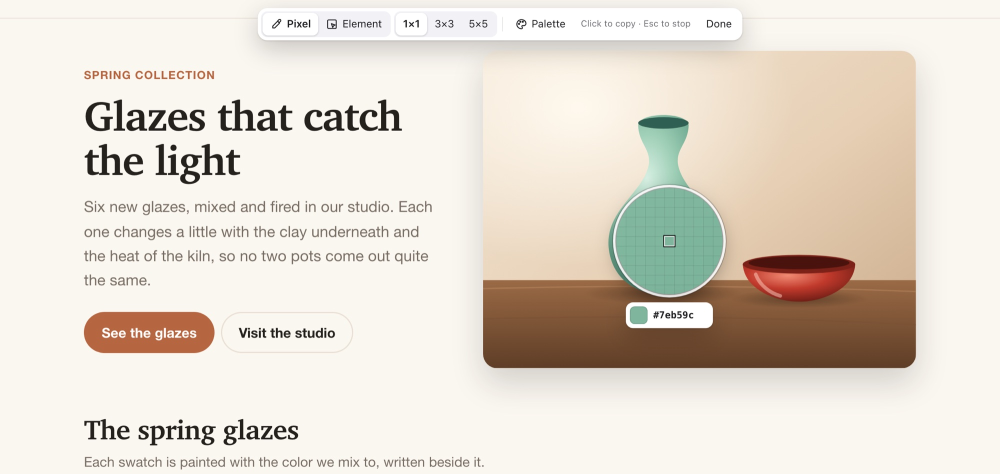
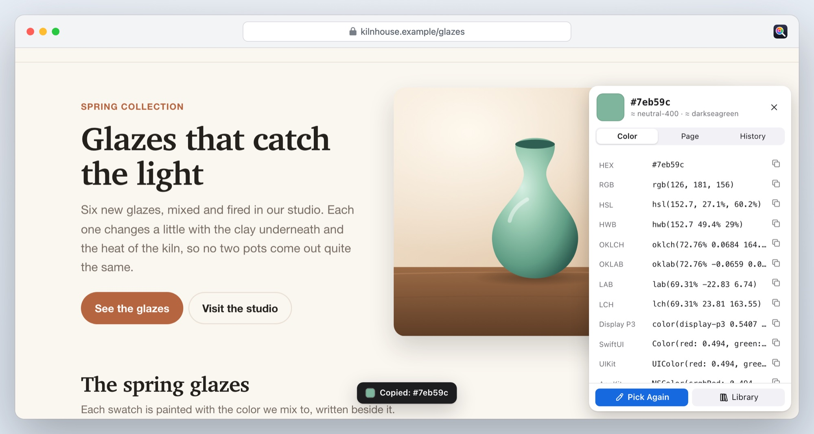
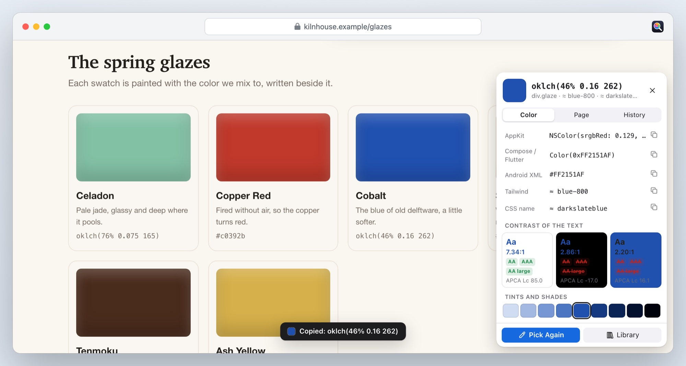
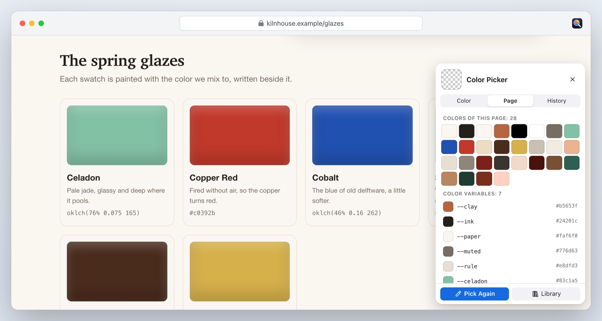
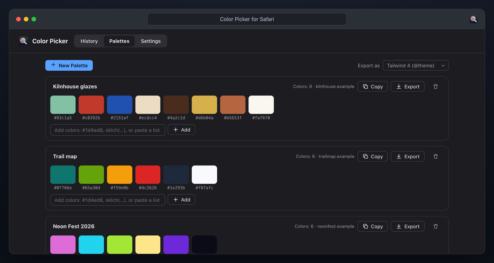

A Safari extension for Mac, iPhone and iPad
Every color on the web, in the format you need.
Point at a pixel in a photo, a button, a heading: Color Picker copies its exact color as HEX, OKLCH, Display P3, SwiftUI, a Tailwind class and more, and shows you how it reads against its background.
€1.99 once, for Mac, iPhone and iPad · macOS 12 and iOS 16.4 or later · No data collected

Point, click, paste
No account, no setup, and no access to your websites.
1. Start it
Click Color Picker in the Safari toolbar, then Pick a Color, or press ⌃⇧C. On iPhone and iPad, it’s in the page menu beside the address.
2. Point
A magnifier shows the page’s real pixels under the pointer, or above your finger, with the color’s value beside it.
3. It’s copied
Click, or lift your finger: the color is on the clipboard in your format, and a panel shows it in all the others.
Pixels, CSS and whole palettes
Pixel mode gives you what was painted. Element mode gives you what was written.
Formats
Copy it the way your project needs it
Sixteen formats, each one tap away. Choose one, and every pick is copied in it.
- HEX, RGB, HSL, HWB, OKLCH, OKLAB, LAB, LCH and Display P3
- SwiftUI, UIKit, AppKit, Jetpack Compose and Flutter, Android XML
- The nearest Tailwind class and CSS color name

Element mode
The exact CSS of any element
Point at a button or a heading and see the colors its author wrote: background, text and border, such as oklch(76% 0.075 165) or a hex code, not an approximation.
- Through half-transparent layers, it finds the background you actually see
- WCAG contrast with AA, AAA and AA Large, and the APCA score
- Tints and shades of every color, ready to copy

Page palette
A page’s whole palette
Every color a page uses, ordered by how much of the page it covers, and the colors in its pictures.
- The page’s color variables from
:root, with their names - Copy them as CSS variables, or save them as a palette
- ⌃⇧P on a Mac opens it straight away

The library
Every pick, every palette
Your last 300 colors, with the site each came from, and palettes you name, edit and add to: type a color, or paste a whole list.
- Delete with Undo, save picks as a palette
- Export as CSS variables, SCSS, Tailwind 4
@theme, JSON, SwiftUI or Android XML - Or as a GIMP or Inkscape palette, or plain text

And all the small things
No website access
It sees a page only when you ask it to pick a color there. No account, no analytics, nothing sent anywhere.
No lag
The page is captured once; every move after that is instant. Scroll, and it takes a new picture when the page settles.
Mac, iPhone and iPad
One purchase for all three. On a touch screen, the magnifier sits above your finger.
Keyboard
Arrow keys move one screen pixel; Return picks. Average 3×3 or 5×5 pixels for photos.
Light and dark
The magnifier, the panel and the library follow your device.
Eleven languages
English, German, French, Spanish, Italian, Portuguese, Japanese, Korean and Chinese.
Color Picker for Safari
€1.99 once
- One-time purchase, no subscription, no account
- Mac, iPhone and iPad with one purchase
- macOS 12 or later, iOS and iPadOS 16.4 or later, with Safari 16.4 or later
- Every feature included
Prices in other countries are set by the App Store.
Questions
Does it need access to the websites I visit?
No. Safari lets Color Picker into the current page only when you click its button or press its shortcut, and only for that page. It doesn’t run on the pages you open otherwise, and it never sees your browsing history.
What’s the difference between pixel and element mode?
Pixel mode reads the screen: whatever is painted under the pointer, including photos, gradients and shadows. Element mode reads the page’s CSS: the exact colors the author wrote for the element under the pointer, such as an oklch() value. Switch between them in the bar at the top of the page, or with P and E.
Why is a pixel slightly different from the CSS value?
Edges, text and images are smoothed when they’re drawn, so the pixel under the pointer can be a blend. For a flat area, pixel mode gives the exact sRGB color. For the value the author wrote, including colors wider than sRGB, use element mode.
Which pages can I pick on?
Any web page. Safari doesn’t let extensions into its own pages, such as Settings or the Start Page. On the few pages that block an extension’s clicks, such as raw files on GitHub, Color Picker lists the page’s colors as text instead.
Do my colors sync between my Mac and iPhone?
Not yet. Each device keeps its own picks and palettes. To move a palette, export it as plain text, then paste the list into a palette on the other device.
What data does it collect?
None. Read the privacy policy.